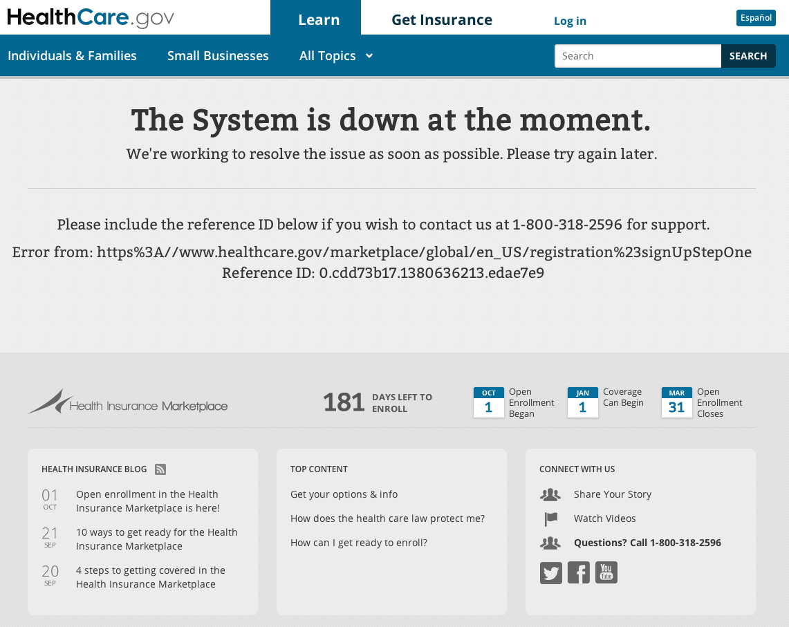

Avoiding launch fails with load testing
Locustio
Abide by our code of Conduct
All attendees, speakers, sponsors, and volunteers at our conference are required to agree with the following code of conduct. If you need to report an incident, ask one of the volunteers in the registration area to contact us or call 321-396-2340.
@kesoleil
Senior Customer Success Manager, PantheonNow Hiring

@aczietlow
Engineer Manager, MindgrubMindgrub
Technical Agency; Drupal and Beyond
Now Hiring
load testing
Lexicon
- performance testing
- determine resource usage, scability, and reliability under different given circumstances
- load testing
- Continously increase the stress on the system until failure to learn the limits
- stress testing
- Place the system under stress, and begin overloading system components
Healthcare.gov
Healthcare.gov
- 250,000 users caused downtime within 2 hours of launch
- Site could handle even fewer authenticated users
- 6 users were able to submit applications on first day
- By Dec 1, site could handle 35k concurrent users
Healthcare.gov
Launch day was mandated in ACA, no wiggle room. Site launched:
- not feature complete
- minimal testing
- minimal troubleshooting
- with no regard to results of testing and troubleshooting
Salesforce + Drupal connection under load
Background:
- Organization funded by donations
- Authenticated users on site
- User data retrieved from Salesforce on login
- User data not updating correctly on live site
- Difficult to debug outside of Prod
Salesforce + Drupal connection under load
How did we fix it?
- Use load test framework to put cloned site under load
- Mimic users logging in and out of system
- Watch in New Relic and with xdebug in real time
- Ability to independently test theories and potential fixes
GDPR Pop-ups and Caching
Background:
- International site
- ~50k Anonymous users per day
- Minimal content updates
- Primarily served from CDN
- Undergoing a relaunch from D7 to D8
- must be GDPR compliant, added cookie notification pop-up to website
- Load test planned ~1 week before launch
GDPR Pop-ups and Caching
Load test results indicated very poor site performance.
- Cache hit rate of less than 5%
- Site running out of PHP workers
- mySQL layer showing distress in New Relic
GDPR Pop-ups and Caching
So what happened?
- Developers identified that GDPR pop-up was interfering with proper site caching
- Were able to implement code fixes in the week before launch
- Ran a shortened Load Test to verify fix before launch
When to load test
- new launches
- feature release
- bug fixes
- major marketing event
- part of CI
- Debugging problems that occur only under load
Testing plan
- Have a plan
- execute it!
Why locust over others
- We didn't want to have to write and maintain clunky XML files
- We liked locust distributed scalability
- Concurrency ++
- Loathe yet another DSL in XML
- We like python
- Open source
Live Demo Time?
Life saver
- Drupal site
- catalogs large data collections
- Paid subscription service
- 4 years old
- moderate success and growth
- db.r4.large instances
- 2 cpu, 16 GB ram
Panic
- more app containers?
- Okay all of the app containers, NOW
- more database power
- Go from db.r4.large instances, to db.r4.8xlarge
- 16 core, 244 Mem
SELECT node.nid AS nid,
node.title AS node_title,
ships_cargo_counts_node.percentage AS ships_cargo_counts_node_percentage,
ships_cargo_counts_node.count AS ships_cargo_counts_node_count,
ships_cargo_counts_node.ships_limit AS ships_cargo_counts_node_ships_limit,
food_logs_node.percentage AS food_logs_node_percentage,
food_logs_node.count AS food_logs_node_count,
food_logs_node.ships_limit AS food_logs_node_ships_limit,
ships_subscription_counts_node.total_subscriptions AS ships_subscription_counts_node_total_subscriptions,
ships_subscription_counts_node.plus_subscriptions AS ships_subscription_counts_node_plus_subscriptions,
ships_subscription_counts_node.executive_subscriptions AS ships_subscription_counts_node_executive_subscriptions,
ships_subscription_counts_node.family_subscriptions AS ships_subscription_counts_node_family_subscriptions
FROM node node
LEFT JOIN (SELECT r.nid AS nid,
limit_table.field_number_cargos_allowed_value AS ships_limit,
COUNT(s.id) AS count,
CASE
WHEN limit_table.field_number_cargos_allowed_value IS NULL OR
limit_table.field_number_cargos_allowed_value = 0 THEN 0
ELSE (COUNT(s.id) / limit_table.field_number_cargos_allowed_value) END AS percentage
FROM node r
LEFT OUTER JOIN og_membership g
ON g.gid = r.nid AND g.group_type = 'node' AND g.entity_type = 'node'
LEFT OUTER JOIN node o ON o.nid = g.etid
LEFT OUTER JOIN field_data_field_email_cargos e
ON e.entity_type = 'node' AND e.entity_id = o.nid
LEFT OUTER JOIN eck_search_record s ON s.id = e.field_email_cargos_target_id
LEFT OUTER JOIN field_data_field_number_cargos_allowed limit_table
ON limit_table.entity_type = 'node' AND limit_table.entity_id = r.nid
WHERE (r.type = 'ships')
GROUP BY r.nid) ships_cargo_counts_node ON node.nid = ships_cargo_counts_node.nid
LEFT JOIN (SELECT v_count.ships AS ships,
limit_table.field_live_data_search_limit_value AS ships_limit,
CASE WHEN v_date.date != '05/2019' THEN 0 ELSE v_count.count END AS count,
CASE
WHEN limit_table.field_live_data_search_limit_value IS NULL OR
limit_table.field_live_data_search_limit_value = 0 THEN 0
ELSE (CASE WHEN v_date.date != '05/2019' THEN 0 ELSE v_count.count END /
limit_table.field_live_data_search_limit_value) END AS percentage
FROM (SELECT SUBSTRING_INDEX(SUBSTRING_INDEX(v_count.name, '_', 5), '_', -1) AS ships,
SUBSTRING_INDEX(SUBSTRING_INDEX(v_count.value, ';', 1), ':', -1) AS count
FROM variable v_count
WHERE (v_count.name LIKE 'banana_boat_exteranl_search_ships_%_count' ESCAPE '\\')) v_count
INNER JOIN (SELECT SUBSTRING_INDEX(SUBSTRING_INDEX(v_date.name, '_', 5), '_', -1) AS ships,
SUBSTRING_INDEX(SUBSTRING_INDEX(v_date.value, '"', 2), '"', -1) AS date
FROM variable v_date
WHERE (v_date.name LIKE 'banana_boat_exteranl_search_ships_%_date' ESCAPE '\\')) v_date
ON v_count.ships = v_date.ships
LEFT OUTER JOIN field_data_field_live_data_search_limit limit_table
ON limit_table.entity_type = 'node' AND
limit_table.entity_id = v_count.ships) food_logs_node
ON node.nid = food_logs_node.ships
LEFT JOIN (SELECT d.*, r.nid AS nid
FROM node r
INNER JOIN (SELECT d.ships AS ships, MAX(d.id) AS id
FROM ships_data d
GROUP BY d.ships) rd ON r.nid = rd.ships
INNER JOIN ships_data d ON d.id = rd.id
WHERE (r.type = 'ships')) ships_subscription_counts_node
ON node.nid = ships_subscription_counts_node.nid
WHERE (((node.status = '1') AND (node.type IN ('ships'))))
ORDER BY node_title ASC
LIMIT 25 OFFSET 0;
// AFAICT: This just works, but I have no idea how
// I'm scared to touch it.
Resolution
- tl;dr - we were scanning a table that now had 6.8 million rows x * y * z times everytime a user hit their homepage.
In conclusion
- Skipping load testing will be expensive later
- Locust is amazing
- Go forth and do awesome